How the exercise works
1 · Reporting location
The same exposure is placed at borrower headquarters (Nível 3) and at the financed sites (Nível 1) in the CRFR2 report. Total lending does not change; only where it is reported.
2 · Site hazards
Drought, water stress, flood and heat are read at each site's coordinates and set beside the AdaptaBrasil municipal index. The two measure related but different things.
3 · Money
A hazard becomes reais only where an exposure and a vulnerability model exist: flood damage to collateral, lost working time and office cooling. The rest stays unpriced.
4 · Credit
The change in how often a fixed flood occurs moves borrower PD, and with it expected loss and risk-weighted assets. Flood damage from step 3 is not added to this.
Climate scenarios
Flood and warm-water data come from the CMIP5 model generation and use RCP pathways; heat and water stress come from CMIP6 and use SSPs. The exercise pairs them by comparable warming. RCP8.5 / SSP5-8.5 is the headline case and RCP4.5 / SSP2-4.5 the milder one. The CRFR2 report uses AdaptaBrasil's pessimistic scenario, which the regulation fixes.
| RCP (CMIP5) | Closest SSP (CMIP6) | Warming by 2081–2100, roughly |
|---|---|---|
| RCP4.5 | SSP2-4.5, middle of the road | about 2.7 °C |
| RCP8.5 | SSP5-8.5, fossil-fuelled high emissions | about 4.4 °C |
What each hazard is compared on
A climate signal is a future slice set against a baseline from the same dataset, so that the difference does not mix two simulations. A projected year stands for a period of about twenty years or more around it, not a single calendar year.
| Hazard | Source | Baseline | Compared with |
|---|---|---|---|
| CRFR2 indices | AdaptaBrasil | Present | 2030, pessimistic scenario |
| Drought | Alpha-Klima SPEI, ERA5-Land | Historical (2005) | Not compared |
| Water stress | WRI Aqueduct 4.0 | Historical (1999) | SSP5-8.5, 2030 and 2050 |
| River flood | WRI Aqueduct Floods, HadGEM2-ES | 2030 | RCP8.5, 2080 |
| Coastal flood | WRI Aqueduct Floods, sea-level 5th/50th/95th percentile | 2030 | RCP8.5 and RCP4.5, 2050 and 2080 |
| Heat | Alpha-Klima, OS-Climate (ACCESS-CM2) | Historical (2005) | SSP5-8.5 and SSP2-4.5, 2030 and 2050 |
| Warm river water | Utrecht University, HadGEM2-ES | 2030 | RCP8.5 and RCP4.5, 2050 and 2080 |
The 2030 flood and warm-water baselines are the first projected year of each dataset, not an observed period. Some slices are left out. On HadGEM2-ES, river flood in 2050 falls below its 2030 baseline at every site, and under RCP4.5 in 2080 at some sites. Water stress has no 2080 or lower-emission series. SSP1-2.6 heat is excluded because its single-model WBGT run stays hotter than SSP5-8.5 through 2050.
The book
Six borrowers draw R$ 971.1 M against R$ 1,618.5 M of collateral, with R$ 187.6 M of undrawn lines. Exposure at default (EAD) adds 40% of each undrawn line to the drawn balance. Baseline expected loss, PD × LGD × EAD, is R$ 8.87 M. PD, LGD and maturity are illustrative inputs, not calibrated estimates.
| ID | Borrower | Headquarters | Sector (CRFR2 Seca) | Sites | Rating | PD (%) | Drawn | EAD |
|---|---|---|---|---|---|---|---|---|
| C01 | Grupo Oeste Agroindustrial S.A. | Salvador, BA | Agricultura | BA3 | BB | 1.85 | 193.5 | 209.0 |
| C02 | Cerrado Grãos Trading S.A. | São Paulo, SP | Agricultura | MT1, MT5 | BB+ | 1.03 | 238.2 | 259.2 |
| C03 | Rio São Francisco Alimentos Ltda. | Belo Horizonte, MG | Produtos alimentícios | AL1, MG1 | BB− | 3.32 | 145.2 | 156.8 |
| C04 | Cacau Litoral Sul Indústria Ltda. | Ilhéus, BA | Produtos alimentícios | BA5, BA6 | B+ | 5.98 | 148.8 | 157.7 |
| C05 | Usina Potiguar Bioenergia S.A. | Natal, RN | Petróleo e biocombustíveis | RN1, RN2 | BB− | 3.32 | 167.4 | 180.8 |
| C06 | Antônio N. Lima (produtor rural) | Barreiras, BA | Agricultura | BA4 | unrated | 8.80 | 78.0 | 82.7 |
C01 to C05 are companies (Pessoa Jurídica); C06 is an individual rural producer (Pessoa Natural). LGD is about 25% for every borrower. Each borrower has two loans: a one-year custeio working-capital line, rolled every season, and an investimento term loan of 8 to 25 years (C06 8, C01 and C04 12, C02 15, C03 20, C05 25). The tenors matter when today's loans are compared with loans written later.
| ID | Site | Municipality | Operation | Ground above cell (m) | Value | Hazards flagged |
|---|---|---|---|---|---|---|
| AL1 | Armazém de Piaçabuçu | Piaçabuçu, AL | Rice drying and storage | 1.5 | 87.0 | coastal, river, heat, water, drought |
| BA3 | Usina de Beneficiamento São Desidério | São Desidério, BA | Cotton gin (mill) | 1.0 | 322.5 | river, heat, water |
| BA4 | Unidade de Armazenagem Formosa do Rio Preto | Formosa do Rio Preto, BA | Grain storage | 2.0 | 130.0 | river, heat, drought |
| BA5 | Unidade de Beneficiamento de Itagibá | Itagibá, BA | Cocoa processing (mill) | 7.0 | 111.5 | river, heat |
| BA6 | Terminal Portuário de Nova Viçosa | Nova Viçosa, BA | Port terminal and warehouse | 0.5 | 136.5 | coastal, heat |
| MG1 | Terminal Fluvial de Pirapora | Pirapora, MG | River grain terminal | 4.0 | 155.0 | river, heat, drought |
| MT1 | Terminal Graneleiro Rondonópolis | Rondonópolis, MT | Rail terminal and silos | 3.0 | 279.0 | heat, drought |
| MT5 | Centro de Distribuição Cuiabá | Cuiabá, MT | Logistics hub | 2.0 | 118.0 | heat, drought |
| RN1 | Usina Sucroalcooleira do Ceará-Mirim | Taipu, RN | Sugar and ethanol mill | 0.3 | 192.0 | river, heat, water, drought |
| RN2 | Centro Administrativo de João Câmara | João Câmara, RN | Mill control office | 5.0 | 87.0 | heat, water, drought |
The asset class decides which vulnerability model a site gets. The warehouses and terminals (industrial) and the three mills (manufacturing) are priced for lost working time, and the office for cooling electricity. The office has no revenue of its own.
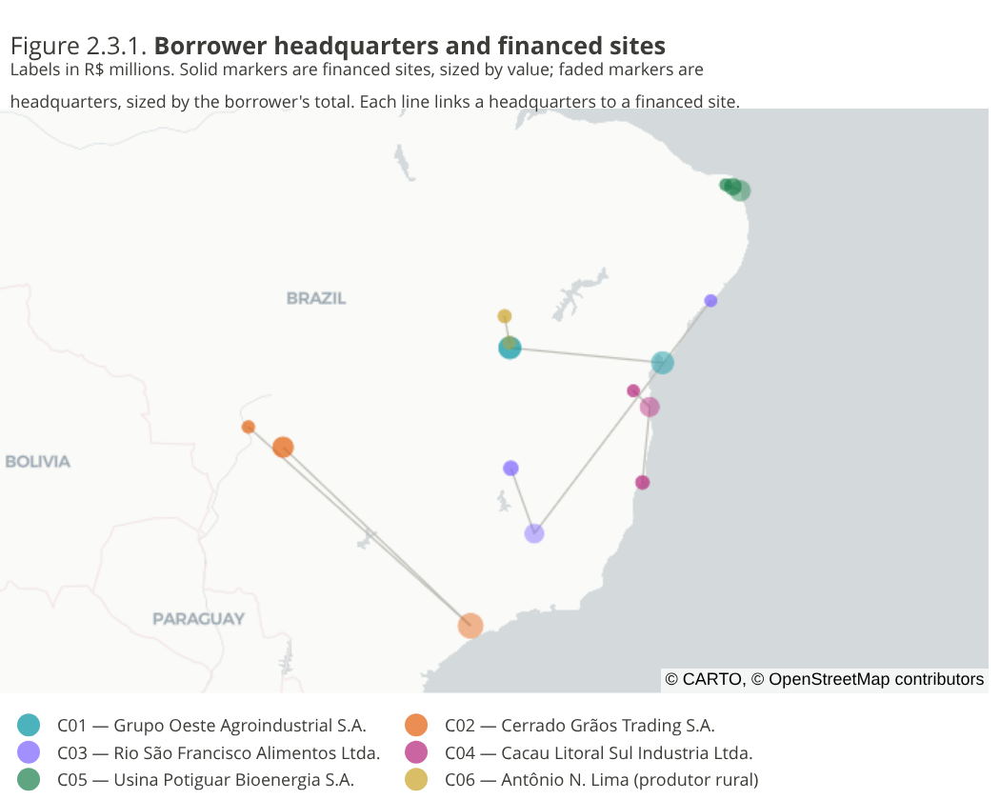
CRFR2: where exposure is reported
CRFR2 is the table of the GRSAC report in which a bank discloses its exposure to physical climate hazards by macro-region. The report is required by Resolução BCB nº 586/2026, with layouts in IN BCB nº 772. The table has two grids: Seca (drought), with one row per economic sector, and Chuva Intensa (intense rain), with one row per counterparty type. For each of the five regions a row carries gross and problematic exposure, plus a risk level for the present and for 2030. The risk level is the exposure-weighted AdaptaBrasil municipal threat index, in five classes from Muito baixo to Muito alto.
Filing at headquarters is the proxy a bank can always produce, since it holds the registered address. Filing at the financed site requires the site's municipality. Multi-site exposure is split across the sites so that totals are preserved.
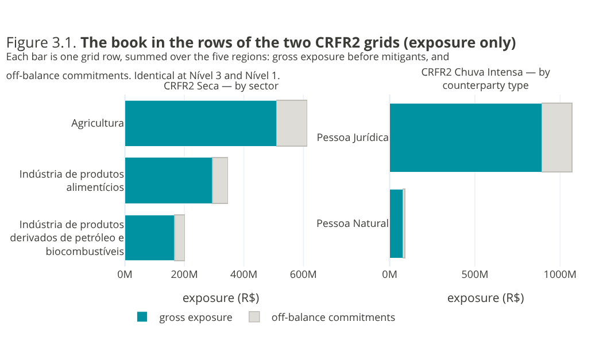
What changes
At headquarters, all exposure sits in the Nordeste and Sudeste. At the sites, C02 moves from the Sudeste to the Centro-Oeste, and C03 splits between the Nordeste (AL1) and the Sudeste (MG1). Together that is R$ 290.4 M, 30% of gross exposure, filed in another macro-region. Fifteen disclosed cells differ: nine change class within a region, and six exist in only one filing because a loan changed region.
| Grid · row | Region | At headquarters (Nível 3) | At the sites (Nível 1) |
|---|---|---|---|
| Chuva Intensa · Pessoa Jurídica | Nordeste | 509.7 · Muito alto / Muito alto | 561.9 · Baixo / Médio |
| Chuva Intensa · Pessoa Jurídica | Sudeste | 383.4 · Muito alto / Muito alto | 93.0 · Médio / Médio |
| Chuva Intensa · Pessoa Jurídica | Centro-Oeste | not filed | 238.2 · Alto / Alto |
| Chuva Intensa · Pessoa Natural | Nordeste | 78.0 · Médio / Alto | 78.0 · Baixo / Baixo |
| Seca · Petróleo e biocombustíveis | Nordeste | 167.4 · Baixo / Alto | 167.4 · Médio / Muito alto |
| Seca · Agricultura | Centro-Oeste | not filed | 238.2 · Baixo / Alto |
| Seca · Agricultura | Sudeste | 238.2 · Muito baixo / Médio | not filed |
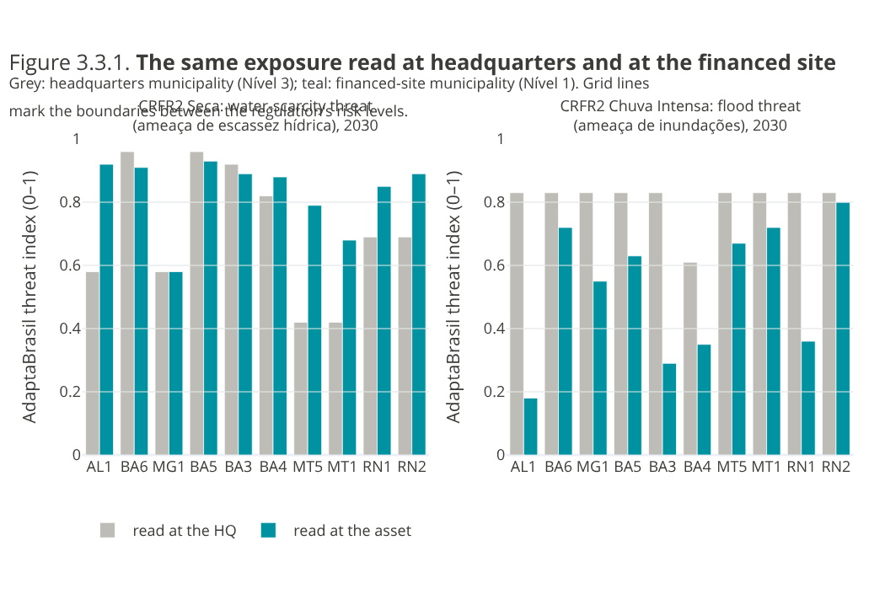
These are municipal threat indices. A lower intense-rain class at a site means a lower municipal score, not that the building cannot flood. The next section reads the hazards at the coordinates.
Hazards at the financed sites
For each hazard, a national map gives context and a scatter sets each site's reading against its municipality's AdaptaBrasil index. The pairs measure related but different quantities, so their colours and ranks need not agree. The site readings show exposure; only supported flood and heat channels feed the later calculations. AdaptaBrasil's are 0–1 scores built to rank municipalities.
| Hazard | Alpha-Klima, at the site | AdaptaBrasil, in the municipality |
|---|---|---|
| Drought | 6-month mean SPEI at the site; national field shows the driest of the 1-, 3- and 6-month means | SPEI (5047): frequency and severity of dry spells below −0.5 |
| Water stress | Basin withdrawals over renewable supply | Share of dry-season supply committed to farming and industry (9), 2020 |
| Flood | River and coastal depth for a 1-in-100-year event | Threat index for floods, flash floods and urban flooding (60044) |
| Heat | Cooling degree days | Number of heat waves (50103) |
Drought
SPEI starts with precipitation minus potential evapotranspiration, accumulated over 1, 3 or 6 months. The accumulated balance is converted to a historical percentile and then to a standard-normal score. Negative SPEI means drier than the local normal; the score is not a 0–1 probability. The site comparisons use the 6-month historical mean. The national Alpha-Klima field instead takes the driest of the three window means at each grid cell and reverses its sign so that larger plotted values indicate greater dryness.
Figure 4.1.1 locates the sites on the municipal index and the mixed-window national field; its site circles use that mixed-window measure. Figure 4.1.2 compares each site's 6-month reading with its municipality, both at the present. AdaptaBrasil counts dry spells below −0.5, whereas the site reading averages historical conditions; the rankings need not match.
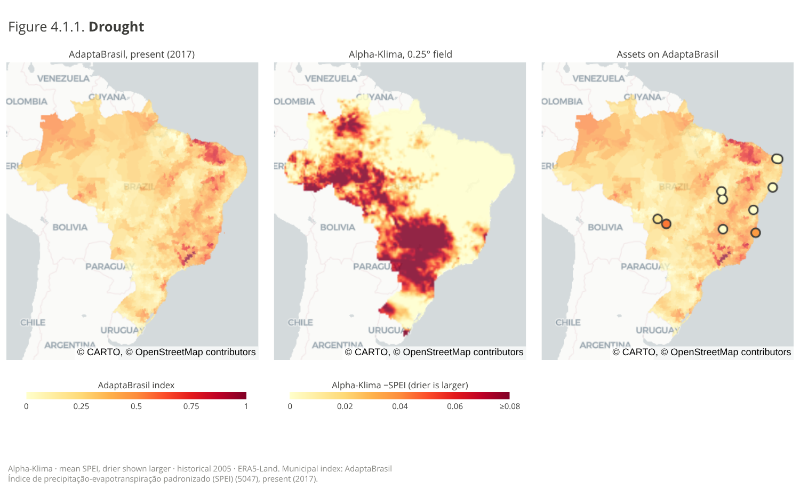
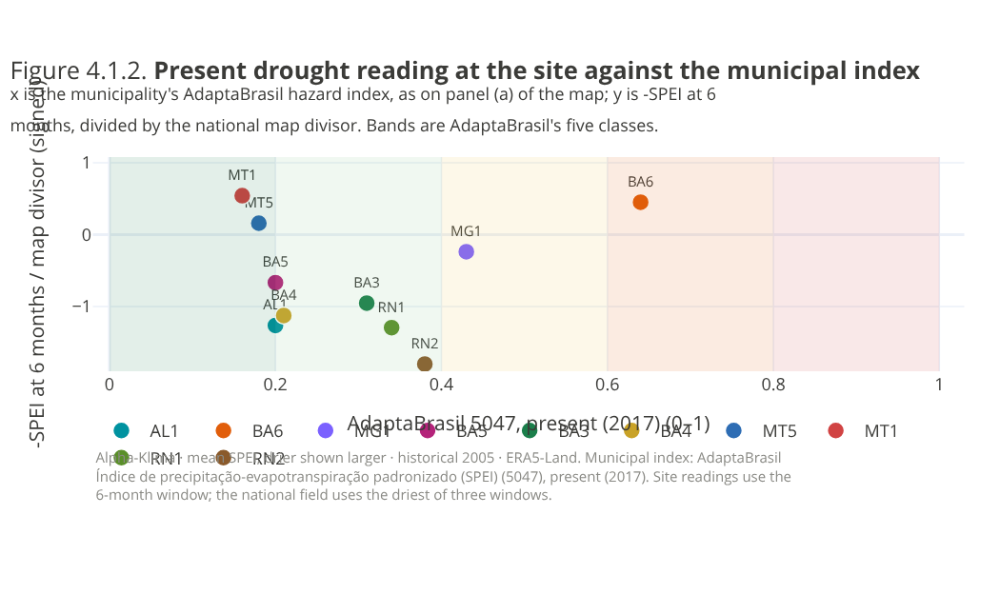
SPEI is relative to local climate: the same score need not imply the same absolute water shortage at two sites. The reading does not account for soil, crops or irrigation.
Water stress
WRI water stress divides annual withdrawals, by irrigation, households, industry and livestock, by the renewable water reaching the sub-basin. A ratio of 0.4 means withdrawals equal four tenths of supply. WRI classes it as low (under 0.1), low–medium (0.1–0.2), medium–high (0.2–0.4), high (0.4–0.8) and extremely high (over 0.8). The ratio belongs to the whole basin, so two sites in one basin read the same number, and a site's own intake does not enter. It measures competition for water, not lack of rain: a wet, heavily irrigated basin can be stressed.
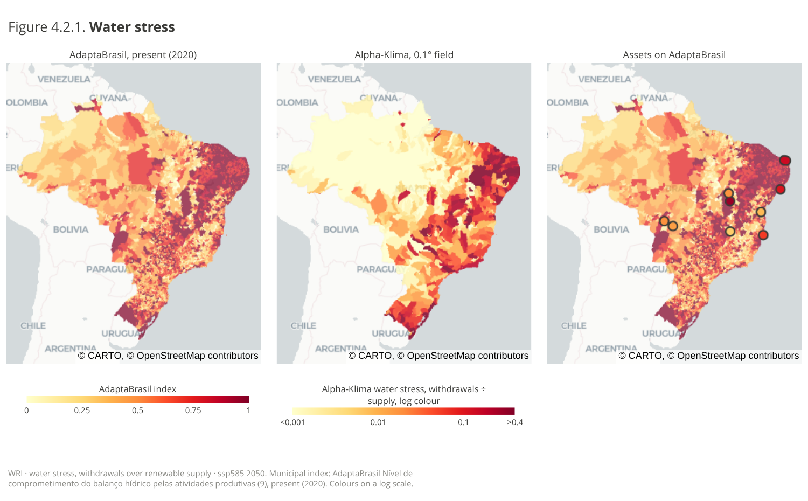
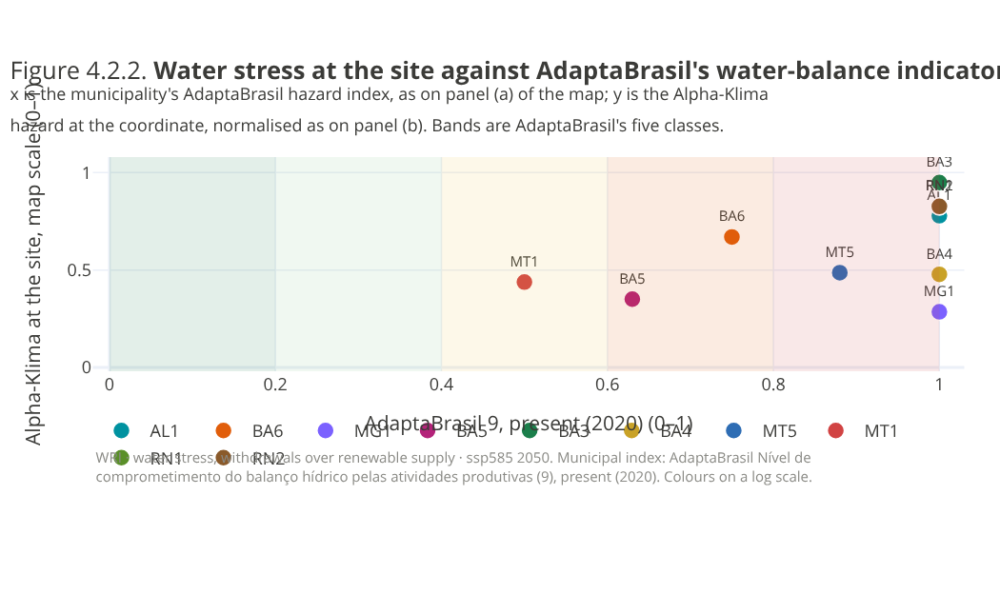
By 2050 under SSP5-8.5, BA3 is medium–high (0.30), and AL1, RN1 and RN2 are low–medium (0.11–0.14). The other sites stay low. AL1's ratio rises more than fourfold, from 0.024 to 0.106, which moves it only from low to low–medium: a large percentage change from a low base. No impact model converts water stress into money.
Flood
The site depths are WRI Aqueduct Floods. A return period expresses annual chance: a 1-in-100-year depth has a 1% chance of being reached or exceeded in a year.
How the WRI flood depth is built, and what it is not
- Climate. A CMIP5 climate model (here HadGEM2-ES for the river) simulates daily weather under an RCP, bias-corrected against observed weather.
- Hydrology. A global hydrological model turns rain and snowmelt into runoff and routes it down the river network on a ~9 km grid.
- Extremes. An extreme-value distribution fitted to each cell's annual maximum flood gives depths for return periods from 2 to 1,000 years.
- Channel. The river channel is assumed to carry the 2-year flood, so only water above that flow leaves it. This is why the 2-year depth is near zero at most sites.
- Depth. The overflow is spread over ~1 km terrain, and depth is water level minus the cell's reference ground.
The coastal layer has the same form, driven by tides, storm surge and sea-level rise instead of river flow. Three consequences follow. The depth refers to a cell, not a building: a site on a terrace inside the cell sees less water. It is unprotected: no levee or sea wall is included. And it measures hazard, not loss, until a depth–damage curve is applied.
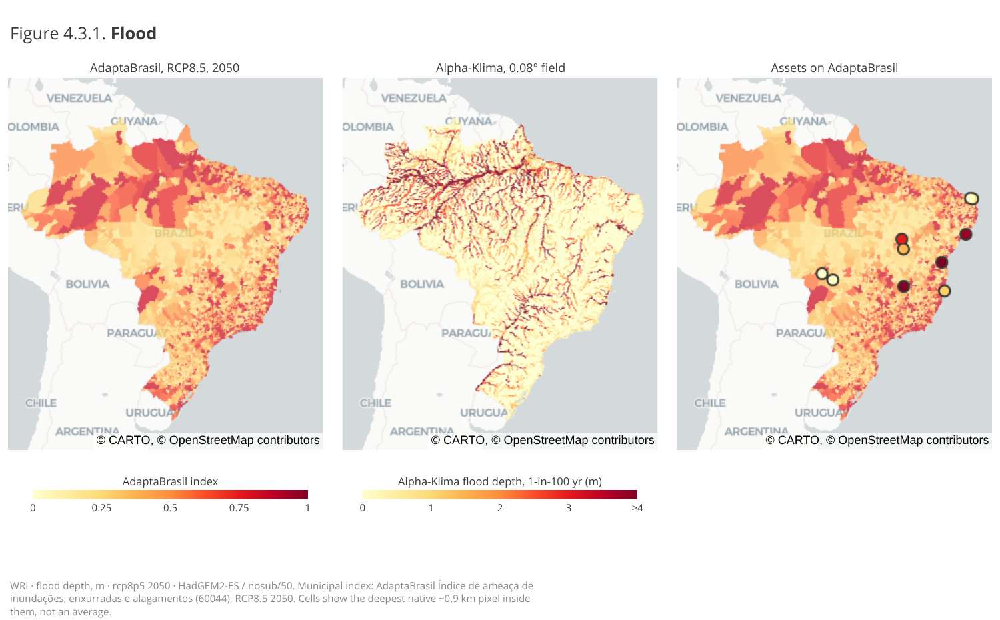
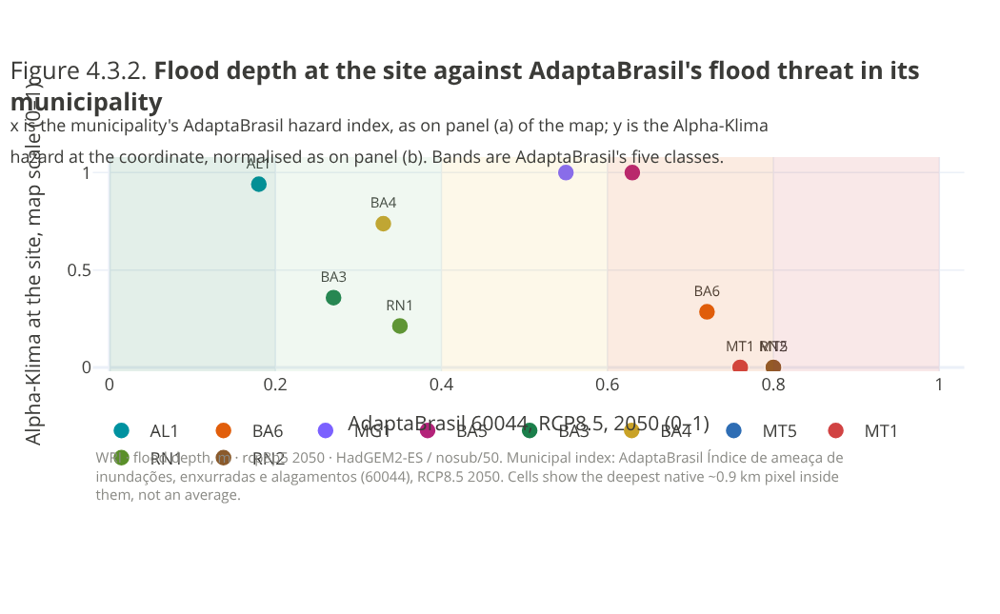
The municipal index includes flash and urban flooding, which the WRI layers do not model. A high municipal score does not establish water at a building, and a low one does not exclude it.
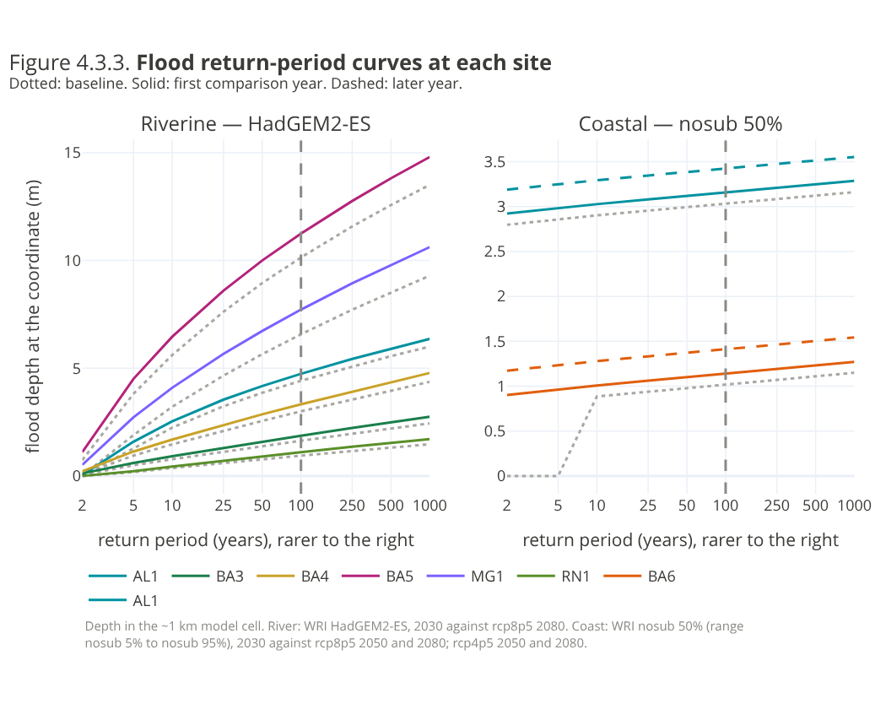
The depth on the site's own ground subtracts the site's height above the cell reference. The platform takes no site elevation, so priced damage and the credit results read the cell depth; the site-ground depth is a screening view.
site-ground depth = max(cell depth − ground above cell, 0)
| Family | Site | Ground above cell | Cell 2030 | Cell 2080 | Site 2030 | Site 2080 |
|---|---|---|---|---|---|---|
| Coastal | AL1 | 1.5 | 3.03 | 3.42 | 1.53 | 1.92 |
| BA6 | 0.5 | 1.02 | 1.41 | 0.52 | 0.91 | |
| River | AL1 | 1.5 | 4.42 | 4.74 | 2.92 | 3.24 |
| BA3 | 1.0 | 1.64 | 1.87 | 0.64 | 0.87 | |
| BA4 | 2.0 | 3.00 | 3.33 | 1.00 | 1.33 | |
| BA5 | 7.0 | 10.14 | 11.25 | 3.14 | 4.25 | |
| MG1 | 4.0 | 6.58 | 7.72 | 2.58 | 3.72 | |
| RN1 | 0.3 | 0.95 | 1.11 | 0.65 | 0.81 |
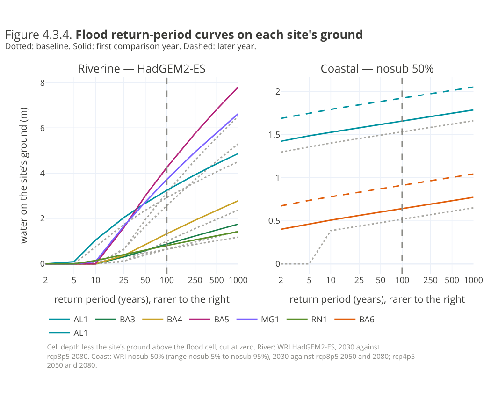
How often the same flood occurs. The event is fixed as the 2030 1-in-100-year depth. Each later curve says how often that depth is then reached.
| Family | Site | RCP8.5 2050 | RCP8.5 2080 | RCP4.5 2050 | RCP4.5 2080 |
|---|---|---|---|---|---|
| Coastal | AL1 | 9.0 (5.1–19.0) | ≥ 50 | 6.1 (3.7–10.9) | ≥ 50 |
| BA6 | 8.3 (4.5–19.0) | ≥ 50 | 5.6 (3.2–10.5) | ≥ 50 | |
| River | six sites | — | 1.5–2.2 | — | — |
The ratio of 1.8 for BA3 means the old hundred-year flood now arrives about once in 56 years. The coastal range is wide because the coastal curve is flat, so a few centimetres of sea level move the frequency a long way. Frequency does not depend on the site's elevation, because subtracting a fixed height lowers the whole curve without changing how often a given flood arrives. The credit calculation can therefore read the cell curve directly.
Heat
The heat indicators are chronic. Each shifts the site's normal year rather than arriving as a shock, and each describes the air or river around a site on an 11–55 km grid, not conditions inside a building.
| Indicator | What it measures | Used for |
|---|---|---|
| Cooling degree days | Sum over the year of daily mean temperature above a base (18 °C for buildings), in °C·day | The office's cooling bill |
| Days above a WBGT threshold | Days a year the wet-bulb globe temperature, which combines heat and humidity, exceeds a limit. Near 30 °C heavy outdoor work has to stop. | Working time lost at the mills |
| Degree days above 32 °C | Heat accumulated above 32 °C, in °C·day | Working time lost at industrial sites |
| Mean work loss, low, medium and high intensity | Share of a year's work capacity lost to heat for light, moderate and heavy work. The model floors work ability at 10%, so the loss cannot exceed 0.9. | Weights moderate and light work at producing sites |
| Weeks of warm water | Weeks a year river water exceeds 30 °C, the water a plant would draw for cooling | Not priced |
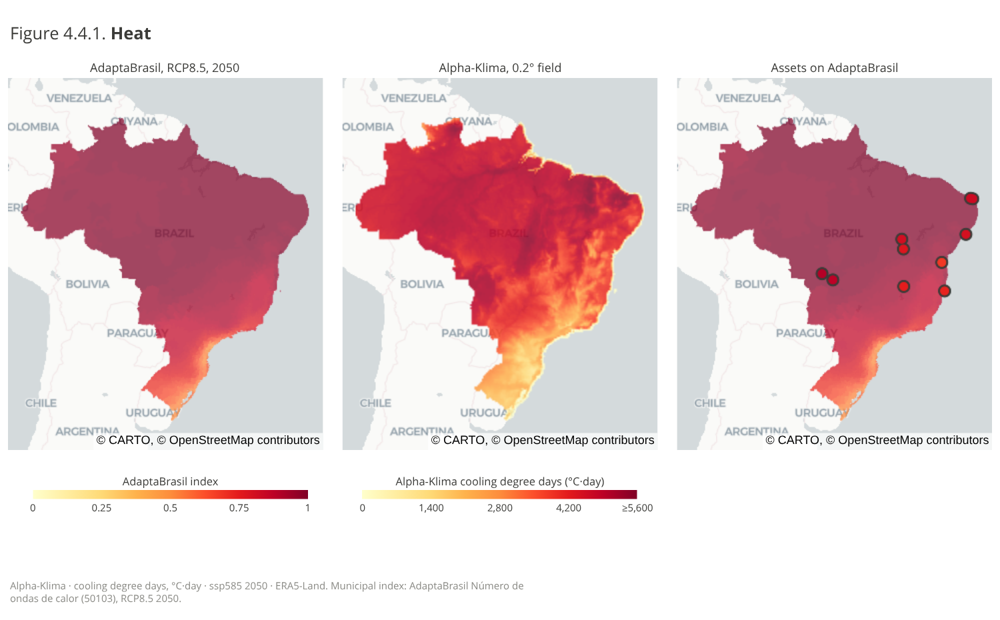
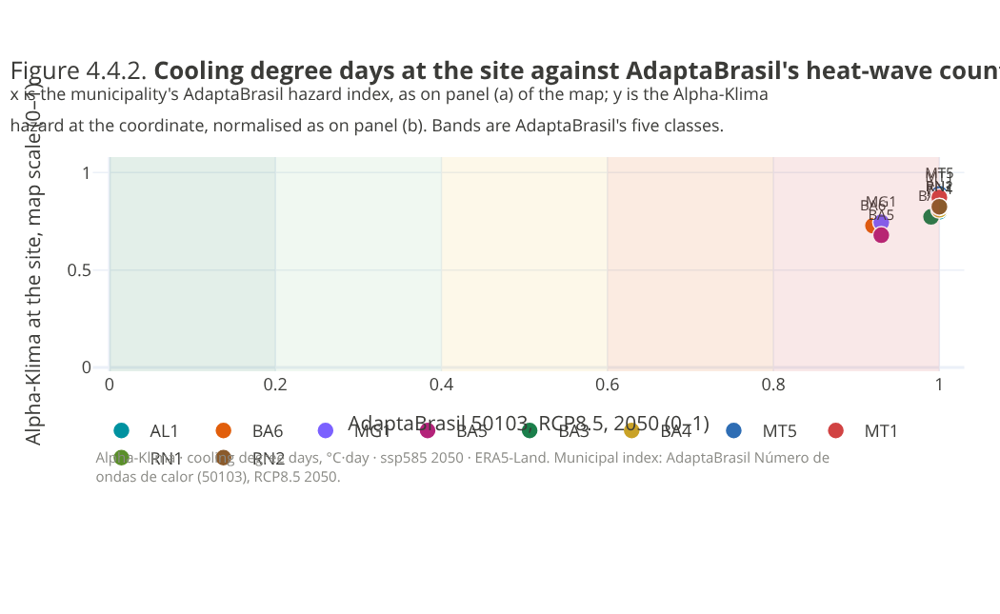
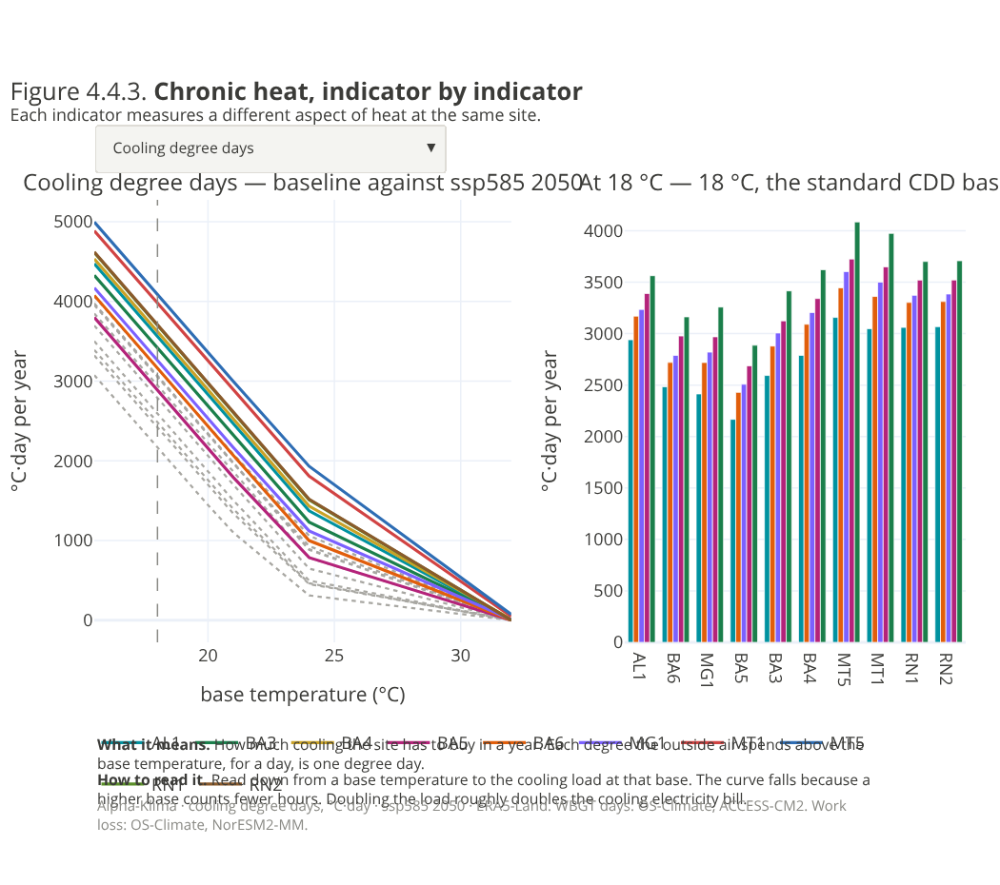
Warm river water. Weeks above 30 °C rise under both pathways, faster under RCP8.5. By 2080 under RCP8.5 the sites spend 23 to 51 weeks a year above the threshold: RN1 rises from 36 to 51 weeks, MT5 from 25 to 50, and MG1 from 5 to 24. The threshold is 30 °C rather than the more common 25 °C intake limit because most sites are already above 25 °C almost all year at the baseline, which leaves no room to show change.
Coastal flood
AL1 and BA6 have coastal readings. The central (50th percentile) sea-level estimate is the headline. The 5th and 95th percentiles give the published range, and a subsidence variant also lowers the land.
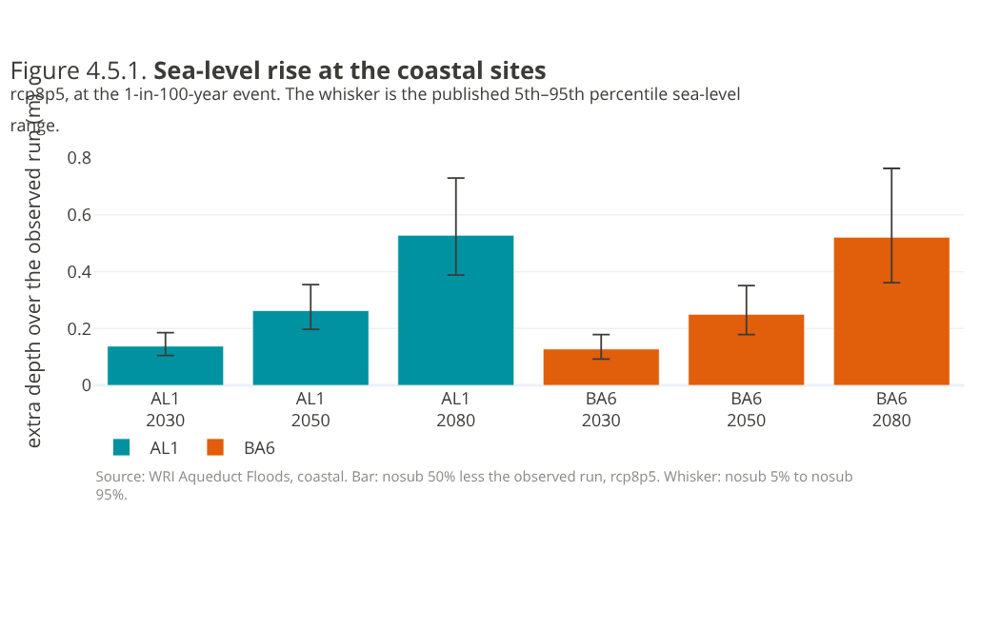
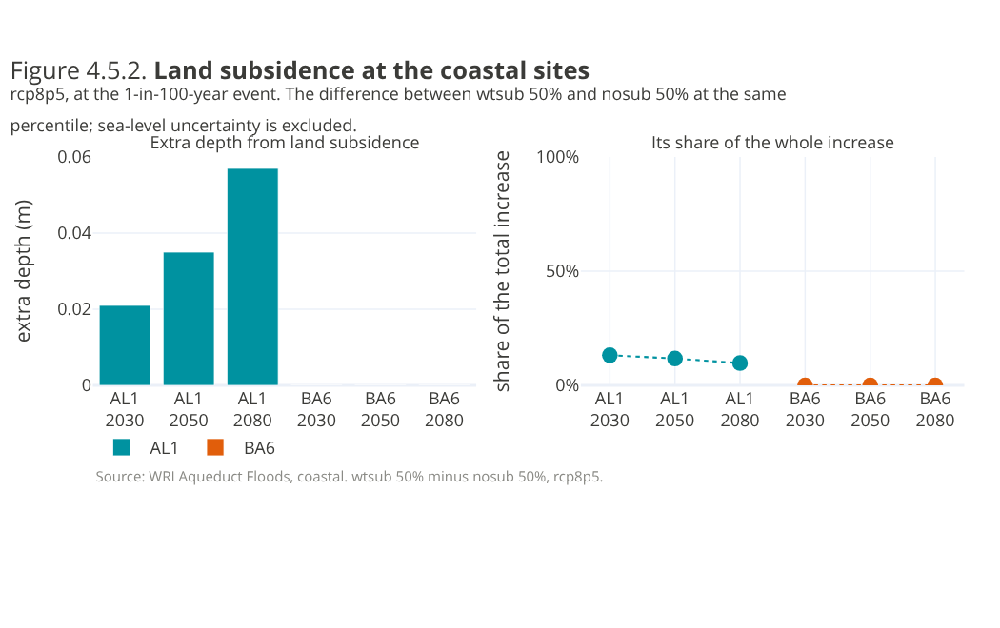
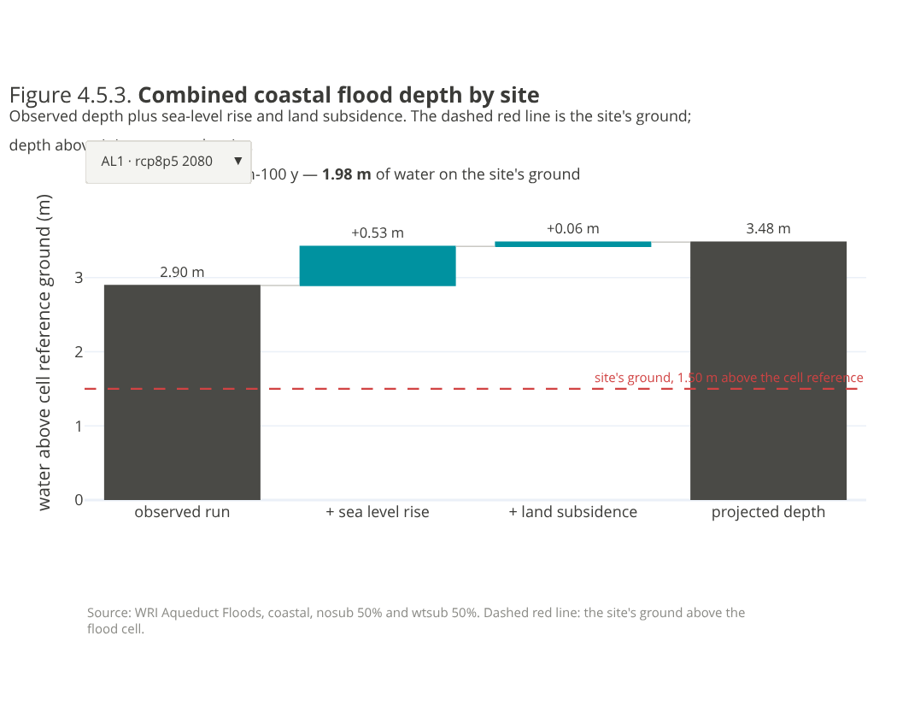
Which impacts become money
A hazard becomes a monetary amount through a vulnerability model. The model turns the hazard's intensity at a site into a damage fraction, lost working time or extra kWh, which is then multiplied by the site's value, labour cost or tariff. Each model is built on one hazard indicator, with its own variable, unit, reference level and period, and must be fed that indicator: a damage curve read on water depth in metres cannot take a municipal threat index. Where no model matches, the hazard is not priced, which does not mean zero loss. Every amount is a change over a baseline specific to its source.
Flood
Expected annual river damage. The river estimates use the depth in the model cell. Expected annual damage is R$ 19.5 M a year across the six river sites in 2030 and R$ 22.4 M in 2080, a change of +R$ 2.86 M. Damage rises at every site, in line with the higher HadGEM2-ES depths. MG1 carries the most, rising from R$ 7.06 M to R$ 8.36 M a year.
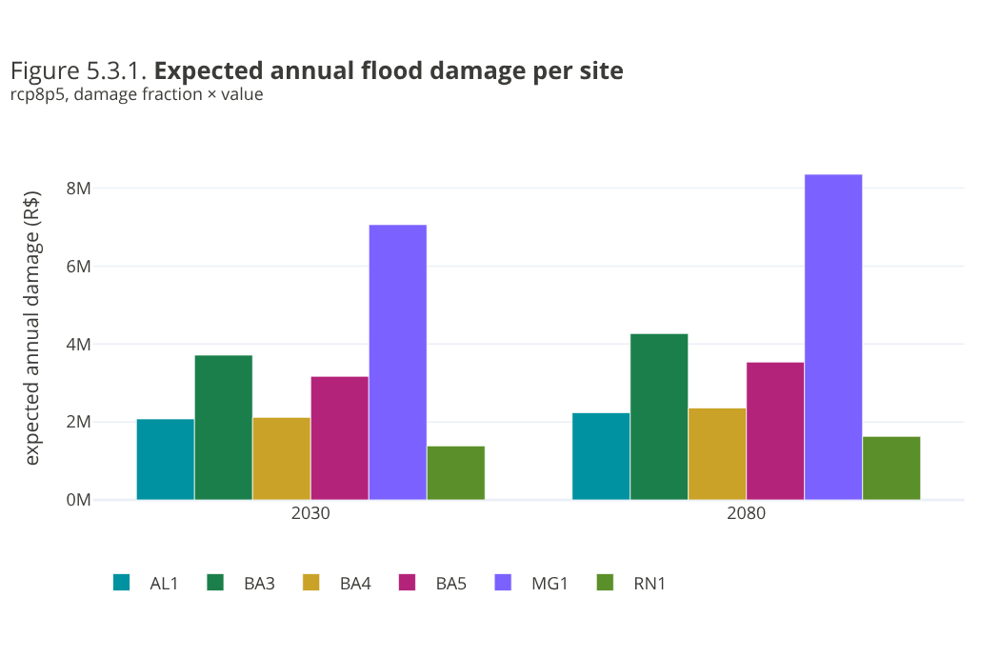
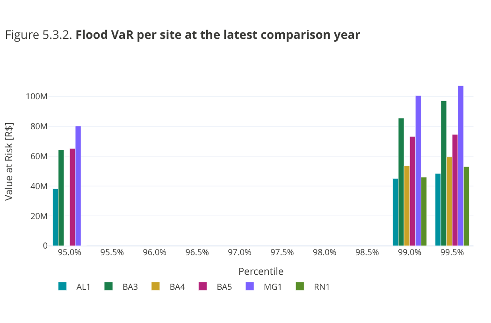
Coastal damage. From 2030 to 2050, expected annual damage rises by R$ 6.13 M at BA6 (from R$ 10.85 M to R$ 16.98 M) and by R$ 0.57 M at AL1 (from R$ 19.31 M to R$ 19.88 M), +R$ 6.71 M in total. AL1's damage fraction is already about 22% in 2030 because its site is under water at every horizon, which leaves little room to rise. By 2080 the two sites reach R$ 20.9 M and R$ 20.3 M.
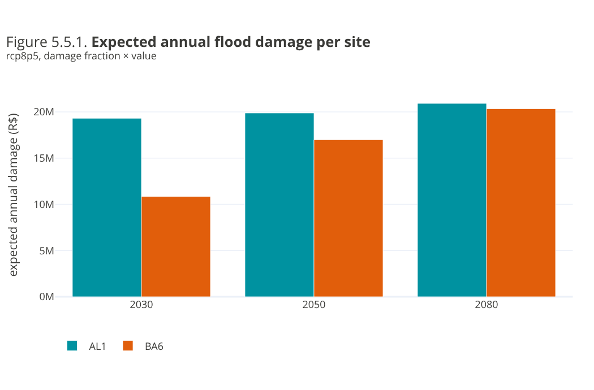
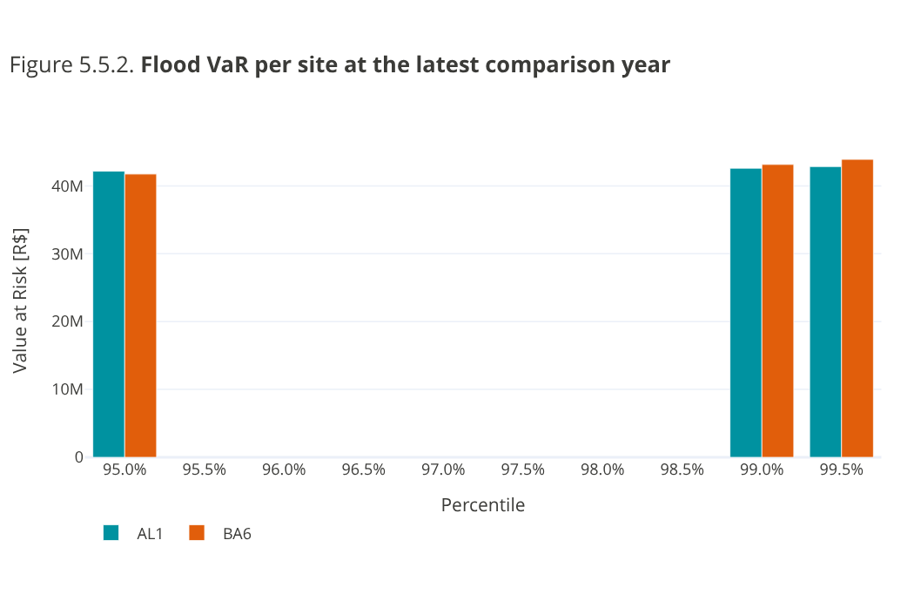
Heat
Only the heat added over the historical baseline is priced, since baseline heat is already reflected in today's operations. Heat costs more working time the harder the work, since the body must shed the heat it produces as well as the heat around it. Occupational limits are set on WBGT by metabolic rate (ISO 7243), and the work-ability functions behind global estimates (Kjellstrom et al., 2018; ILO, 2019) assign about 400 W to heavy work such as field labour and manual loading, 300 W to moderate work such as running machines on a factory floor, and 200 W to light work such as office jobs. At the same WBGT heavy work loses capacity first and fastest; light work in an air-conditioned room loses almost none.
Lost working time is valued at 12% of revenue (the illustrative labour-cost share). The platform prices a site's whole working year as heavy work, so each producing site splits its revenue across heavy, moderate and light work exposed to heat, with the rest not exposed; moderate and light work count at the site's work loss for that intensity over its loss for heavy work. The office's extra cooling demand is priced at 80 kWh per m² a year today and R$ 0.85 per kWh.
Working time. By 2050 under SSP5-8.5 the three mills lose an extra 5.0–9.4% of working hours (BA5, BA3, RN1). The industrial sites lose 0.15–2.1%. The mills use a WBGT model and the industrial sites a degree-day model, so the two sets of figures are not directly comparable.
In reais. Producing sites lose R$ 9.26 M a year by 2050, 0.53% of their revenue, and 94% of that is at the three mills (RN1 R$ 3.39 M, BA3 R$ 3.36 M). The 2030 figure is a little over a third of it. The office's cooling bill rises from R$ 0.54 M to R$ 0.93 M a year, +R$ 0.38 M (+70%, R$ 47.9 per m²). These are annual amounts in each climate slice, not cumulative losses.
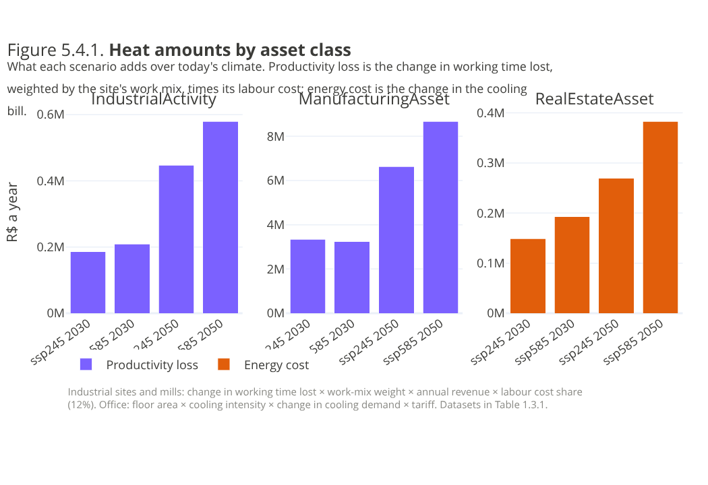
Priced impacts side by side
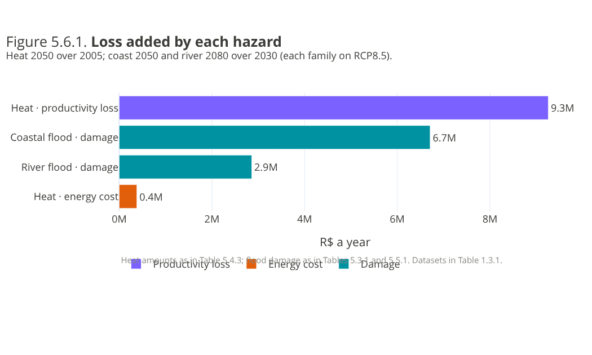
Portfolio aggregation
The platform's portfolio service runs its own risk analysis on the ten sites, groups those that one event can hit together, and aggregates their losses into a single distribution. It uses its own hazard set and scenario labels, so its totals are not comparable with the site amounts above, and they do not feed the CRFR2 report or the credit results.
Each hazard is clustered with its own spatial method. Sites in one cluster share events, so their losses are aggregated together, while a site alone in its cluster is treated as independent; this is why a portfolio tail is not the sum of site tails. The metrics summarise the portfolio's annual loss: expected loss is its mean, value-at-risk the loss exceeded only with a percentile's small probability, and expected shortfall the average loss beyond it. The scenario labels are narratives, and where a hazard has no series for one the platform uses the closest pathway, which is why SSP1-2.6 and SSP2-4.5 give identical values.
The six clusters are BA3 with BA4 (R$ 452.5 M), MT1 with MT5 (R$ 397.0 M), RN1 with RN2 (R$ 279.0 M), BA5 with BA6 (R$ 248.0 M), and MG1 and AL1 on their own. Under SSP5-8.5, combined expected annual loss rises from R$ 44.5 M (historical) to R$ 52.8 M in 2050 and R$ 55.3 M in 2080. The largest published value-at-risk rises from R$ 182.8 M to R$ 198.0 M.
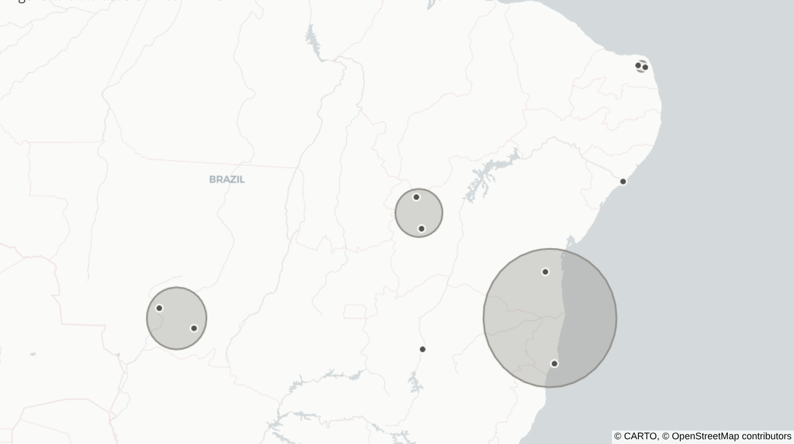
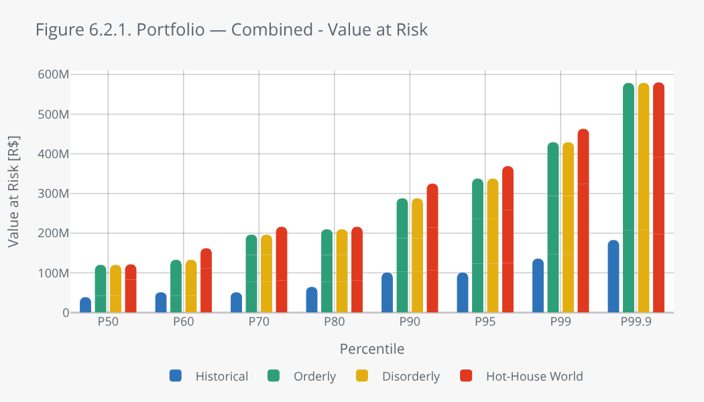
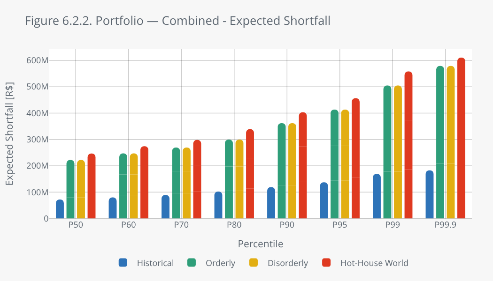
Flood and the loans
The bridge from flood frequency to capital
The event is the 2030 1-in-100-year depth on each site's curve, so its baseline chance is 1% a year by construction. Reading the same depth on a later curve gives its new annual chance q. PD then scales with the frequency ratio at the flood elasticity from BIS Working Paper 1274:
PD / PD₀ = 1 + 0.134 × (q / q₀ − 1)
Today's PD is assumed to reflect today's climate. Site ratios are weighted by collateral value to give a borrower figure. Each borrower is assessed on one flood family (river or coast, whichever moves RWA more), and the two are not added. A frequency off the published 2–1,000-year curve is a bound and is not priced. Heat does not enter.
Expected loss and Basel IRB risk-weighted assets are computed for two LGD cases. LGD unchanged assumes the flood never reaches the recoverable assets. LGD at 40%, Basel's senior unsecured value, assumes the collateral stops counting. Neither case is a forecast of recoveries. RWA uses the exact binary mixture of a normal state and a flood state. The paper's first-order formula differs from it by −2.2% to +4.5%.
2050: the two coastal borrowers
Only the coast has a priced 2050 frequency, where the event occurs 8–9 times as often. PD roughly doubles for C03 and C04.
| Borrower | Times as often | PD now → 2050 (%) | EL now → 2050 | RWA change, LGD unchanged | RWA change, LGD 40% |
|---|---|---|---|---|---|
| C03 (AL1) | 9.0 | 3.32 → 6.89 | 1.36 → 2.82 | +10.1% | +15.4% |
| C04 (BA6) | 8.3 | 5.98 → 11.83 | 2.44 → 4.82 | −1.4% | +3.1% |
| Book, 2 of 6 borrowers | — | EAD 314.5 | 3.8 → 7.6 | +4.00% | +8.85% |
C04's RWA falls with LGD unchanged even though its PD doubles. This is a property of the binary-mixture capital formula, so borrower and book results should be read separately. C01, C05 and C06 (R$ 472.5 M of EAD) have no flood family compared in 2050. C02 (R$ 259.2 M) has no flood curve at all. Only one of today's twelve loans, C05's term loan, is still running in 2050.
Sensitivities. Reading the coast at the 5th sea-level percentile gives +3.01% / +5.69%, and at the 95th +6.05% / +16.94%. RCP4.5 gives +3.22% / +6.47%.
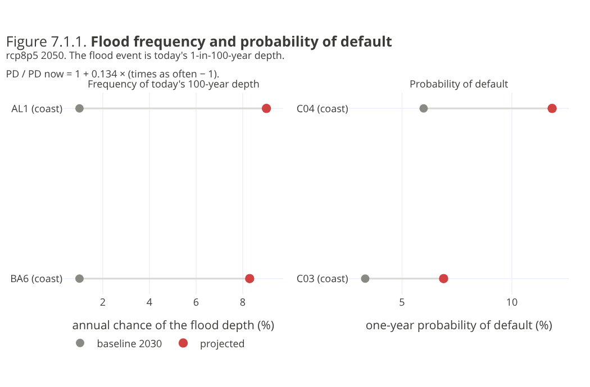
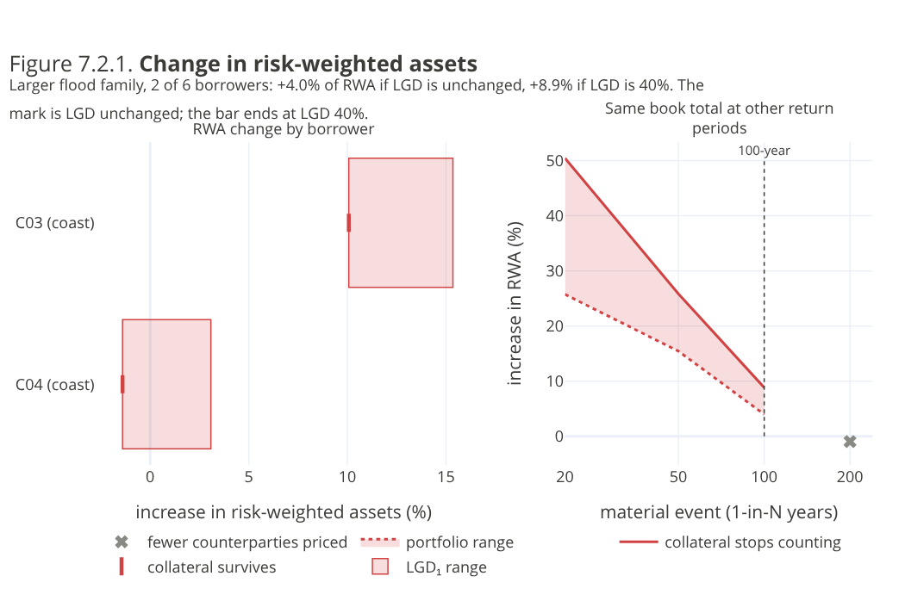
2080: the five river borrowers
By 2080 the coastal frequency is off the published curve and is not priced, so the total is river only. At borrower level river floods come 1.6–2.0 times as often, and PD rises by 8–13%.
| Borrower | Times as often | PD now → 2080 (%) | RWA change, LGD unchanged | RWA change, LGD 40% |
|---|---|---|---|---|
| C01 | 1.79 | 1.85 → 2.04 | +2.84% | +3.82% |
| C03 | 1.95 | 3.32 → 3.75 | +2.42% | +3.48% |
| C05 | 1.78 | 3.32 → 3.67 | +2.16% | +3.30% |
| C04 | 1.85 | 5.98 → 6.66 | +1.15% | +2.17% |
| C06 | 1.63 | 8.80 → 9.54 | +0.32% | +1.21% |
| Book, 5 of 6 borrowers | — | EAD 787.0; EL 8.2 → 9.0 | +1.93% | +2.96% |
RCP4.5 has nothing inside the published curve in 2080. None of today's loans is still running.
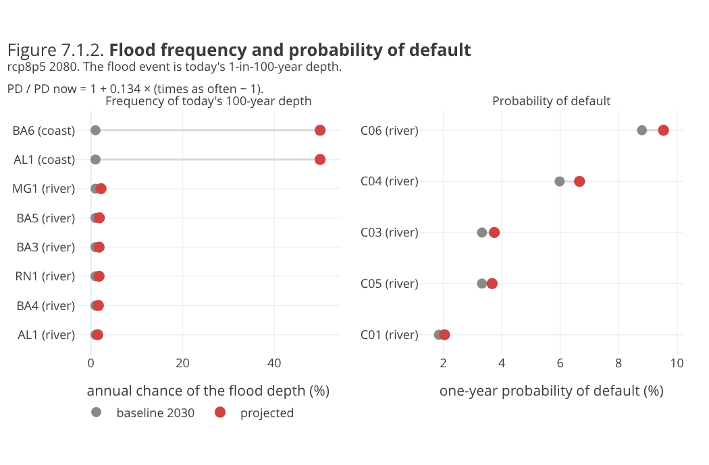
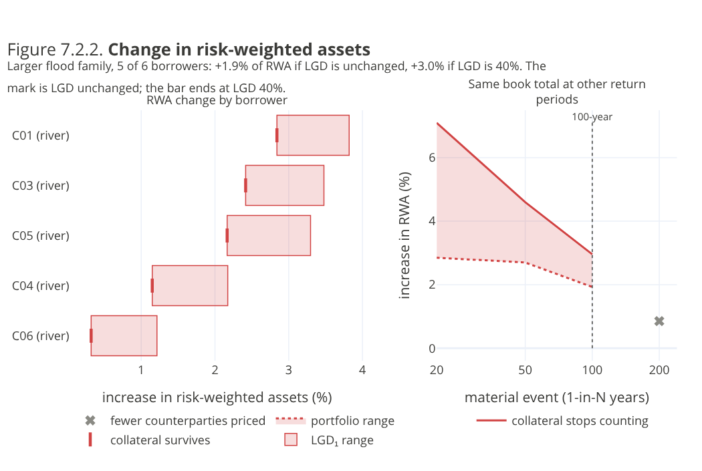
Loans written later
Most of today's loans mature long before 2050, but a bank financing these sites will keep lending to them: seasonal lines are rolled and term loans replaced. The exercise therefore writes each of today's loans again in 2040, 2050 and 2080 on identical terms, so that only the climate each loan meets changes. In each year of a loan's life, the flood ratio is interpolated linearly between the compared years and held at the last priced year after that; it is not extrapolated. The change in expected loss is averaged over the loan's life, weighted by the balance still outstanding. Term loans repay in equal yearly instalments.
| Written in | EL change from flood | Largest single loan | Today's loans still running | Heat loss (R$ M a year) |
|---|---|---|---|---|
| 2028 (today) | +5.3% | C03 term loan, +24.8% | 12 of 12 | 5.2 |
| 2040 | +32.1% | C03 term loan, +83.5% | 3 of 12 | 8.2 |
| 2050 | +49.5% | C03 seasonal line, +107.4% | 1 of 12 | 9.3 |
| 2080 | +52.2% | C03 seasonal line, +107.4% | 0 of 12 | 9.3 |
Each percentage is relative to that vintage's own baseline expected loss. The coastal loans of C03 and C04 are held at their 2050 frequency, so their later vintages are understated. Heat after 2050 repeats the 2050 value, so the 2080 heat column is not a fresh projection. The heat loss is concentrated at C05 (R$ 3.4 M a year by the 2050 vintage), C01 and C04, up to about 0.5% of their revenue.
What the credit results leave out
The credit results cover one flood family per borrower, and only sites with a supported frequency curve. They exclude heat, early default and discounting, and they assume nothing between the two LGD cases. The PD elasticity is a literature value, not a bank calibration. The platform documentation describes output of this kind as screening grade: an input to a disclosure, with calibrated vulnerability, model validation and sign-off remaining with the bank.
Results
| Result | Value | Read in |
|---|---|---|
| Book | 6 borrowers, 12 loans, 10 sites; R$ 971 M drawn against R$ 1,618 M of collateral | The book |
| Exposure filed in another macro-region at Nível 1 | R$ 290.4 M, 30% of the book (C02, C03) | CRFR2 |
| CRFR2 cells that change class | 15 (9 within a region, 6 moved region) | CRFR2 |
| Hundred-year flood on the sites' ground, 2030 | 0.52 m to 3.14 m across 8 flood exposures | Flood |
| Flood frequency change, RCP8.5 | River 1.5–2.2× by 2080; coast 8–9× by 2050, off the curve by 2080 | Flood |
| Heat productivity loss added, SSP5-8.5 2050 | R$ 9.26 M a year, 0.53% of the sites' revenue | Heat |
| Office cooling cost added, SSP5-8.5 2050 | R$ 0.38 M a year, 70% above the baseline bill | Heat |
| Coastal flood damage added, 2030 → 2050 | +R$ 6.71 M a year (2 sites) | Flood |
| River flood damage added, 2030 → 2080 | +R$ 2.86 M a year (6 sites) | Flood |
| Book RWA change, RCP8.5 2050 | +4.00% (LGD unchanged) to +8.85% (LGD 40%), 2 of 6 borrowers | Credit |
| Book RWA change, RCP8.5 2080 | +1.93% to +2.96%, 5 of 6 borrowers | Credit |
| Lifetime EL change from flood, by vintage | +5.3% (2028), +32.1% (2040), +49.5% (2050), +52.2% (2080) | Vintages |
| Heat loss over the term loan, by vintage | R$ 5.2 M a year (2028), 8.2 (2040), 9.3 (2050 and 2080) | Vintages |
How to read them
- Reporting location matters. Moving from headquarters to sites reclassifies a third of the book by region and lowers intense-rain threat everywhere, without changing total lending.
- Municipal indices and site readings disagree. Sites in high flood-threat municipalities can be dry at their coordinates, and a low-threat municipality can hold the deepest coastal water in the book.
- Heat is the largest priced amount, concentrated in three labour-intensive mills. The office bill is a separate, smaller cost.
- Flood reaches capital through frequency, not damage. The RWA effect is modest for the book but large for individual coastal borrowers, and it grows sharply if the material event is set at a more common return period.
- Later loans meet more of the changed climate. The same loan written in 2080 carries about ten times today's lifetime flood effect on expected loss.
Sources and methods
- Alpha-Klima platform: methodology, hazard datasets, vulnerability models, climate scenarios, aggregation and dependence and screening versus submission (login required).
- AdaptaBrasil: methodology, indicator list and API. CRFR2 layouts: BCB, Leiautes do Relatório GRSAC (IN BCB nº 772).
- WRI, Aqueduct Floods Methodology (2020), for river and coastal depths.
- Vicente-Serrano et al. (2010), SPEI, spei.csic.es; Muñoz-Sabater et al. (2021), ERA5-Land, ESSD 13.
- Neidell et al. (2021), Temperature and work, PLOS ONE, for the industrial heat response.
- Scussolini et al. (2016), FLOPROS, NHESS 16, for flood-protection standards.
- BIS Working Paper 1274 for the climate-credit bridge; Basel Framework CRE20, CRE31 and CRE32 for IRB capital, credit conversion and LGD.
- OS-Climate hazard inventory for dataset identifiers.